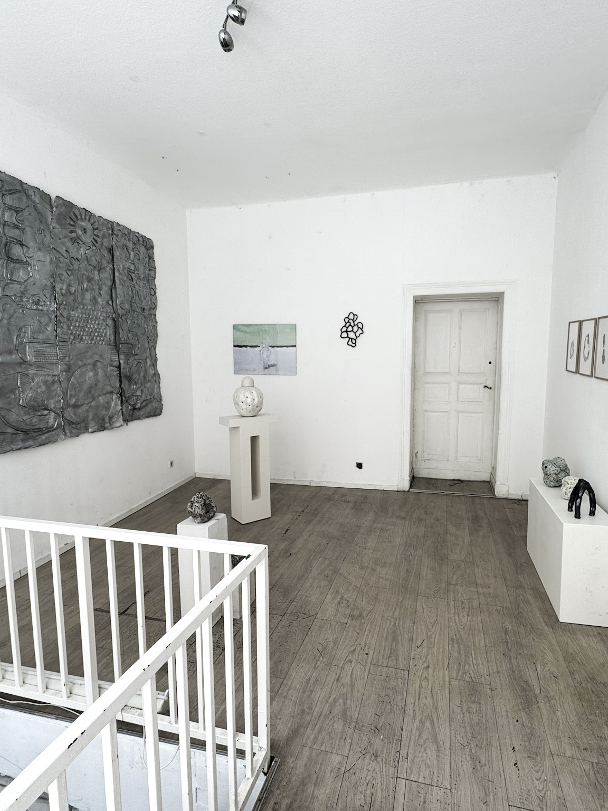
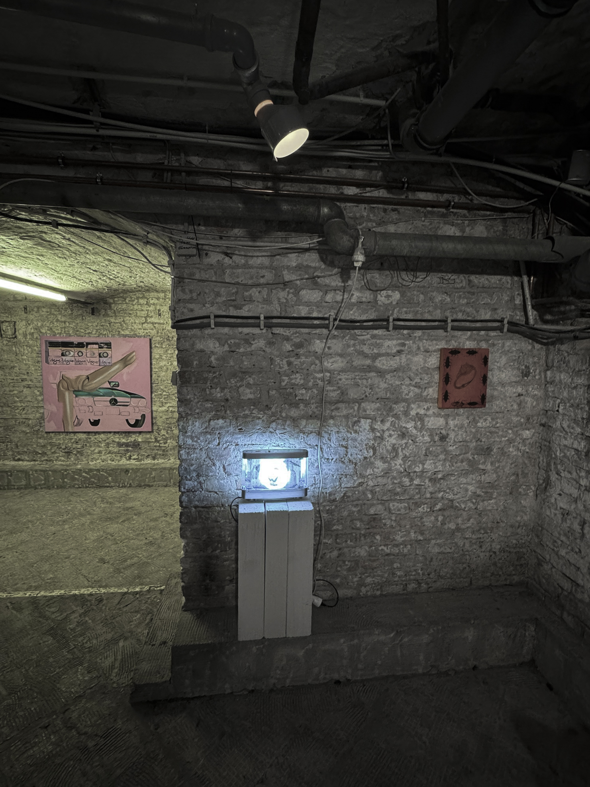
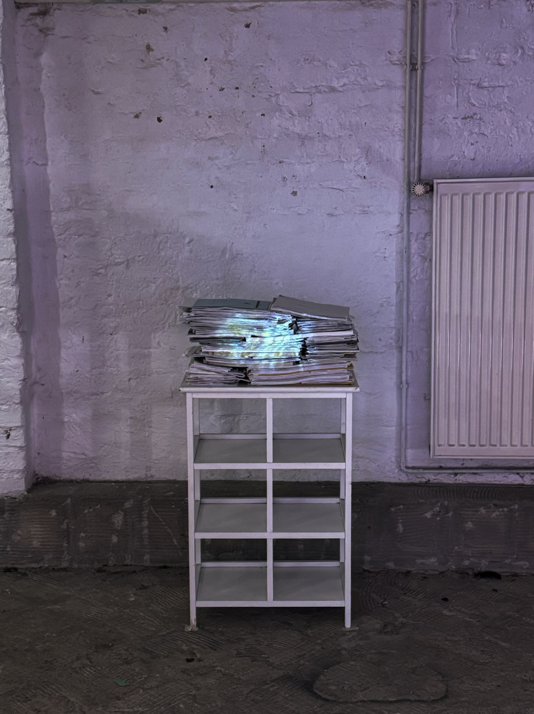
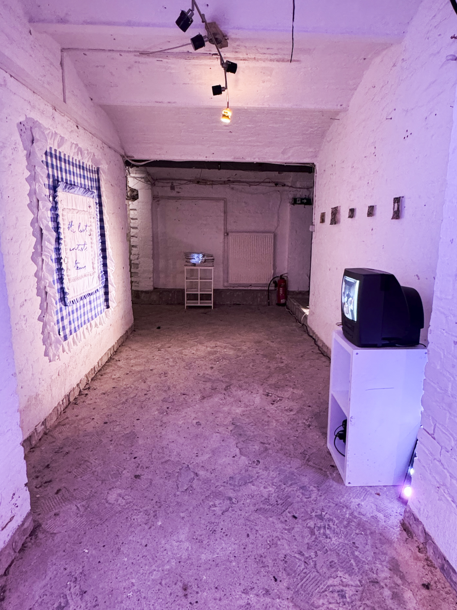
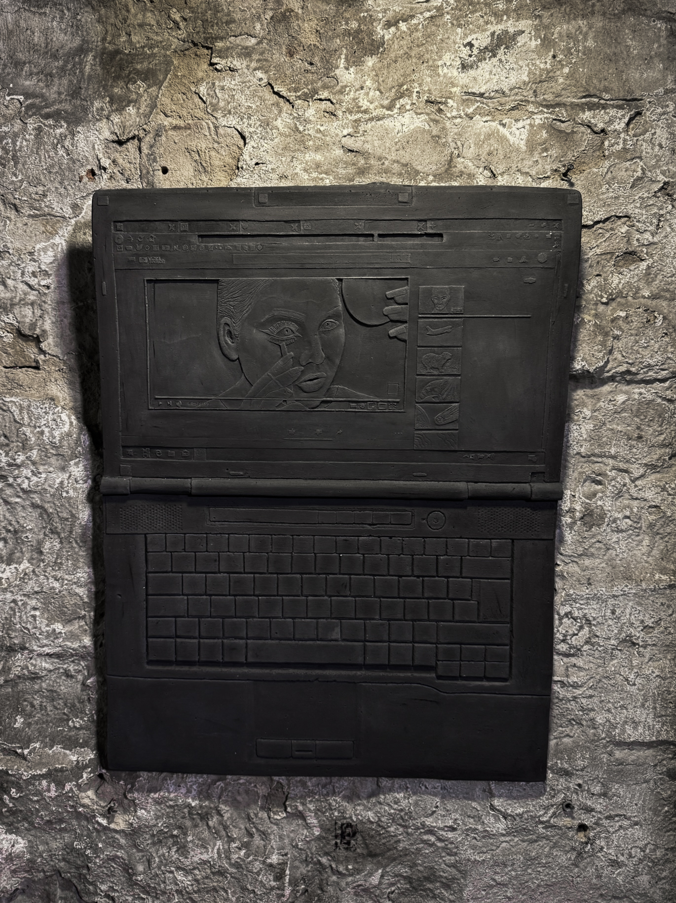
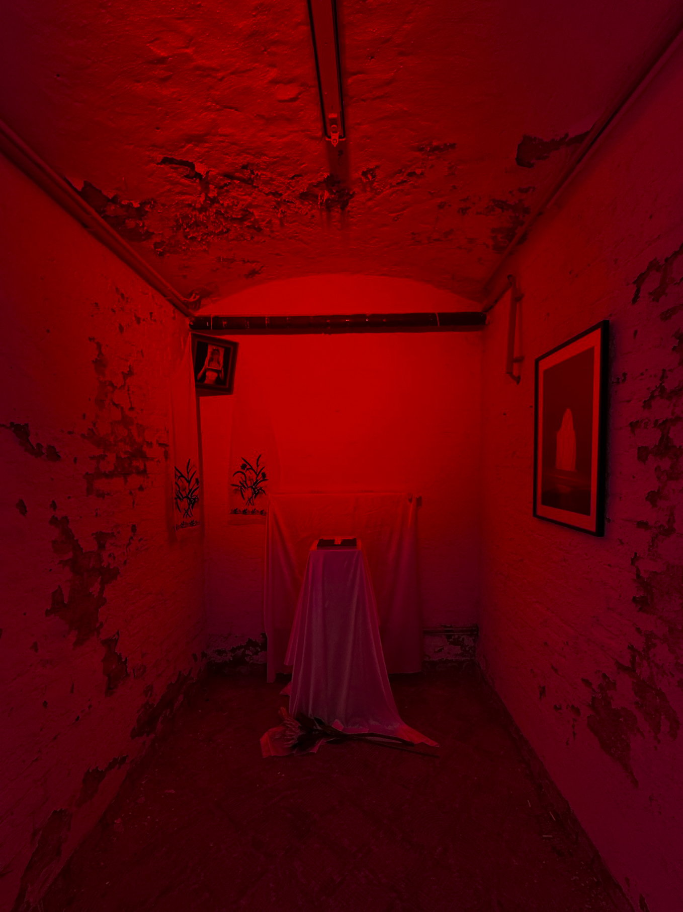
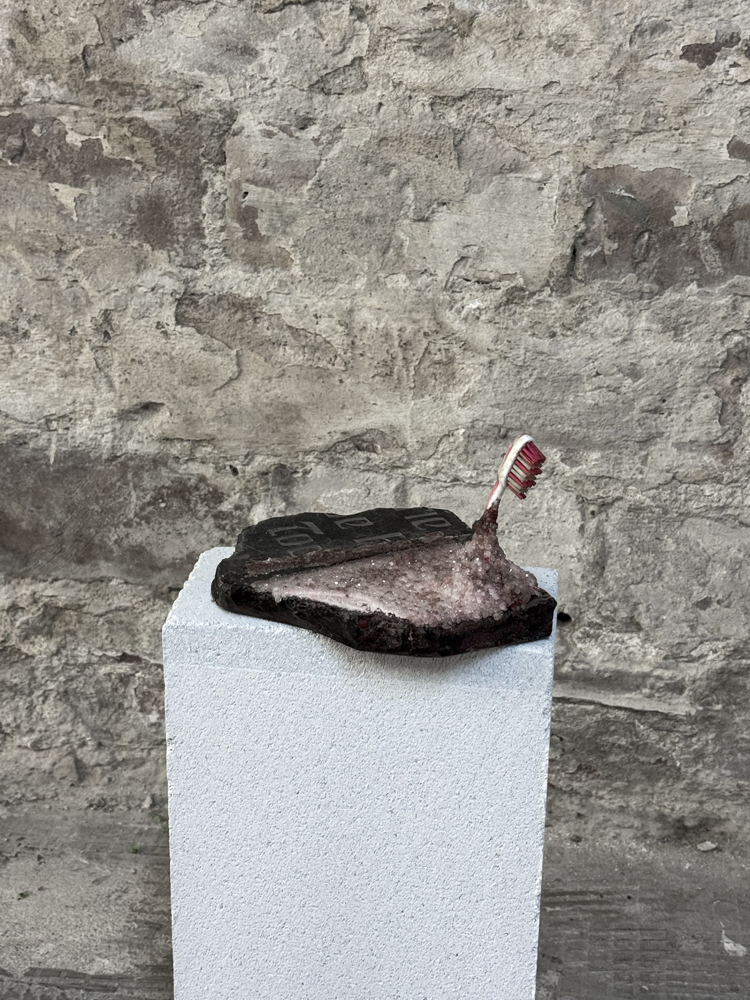
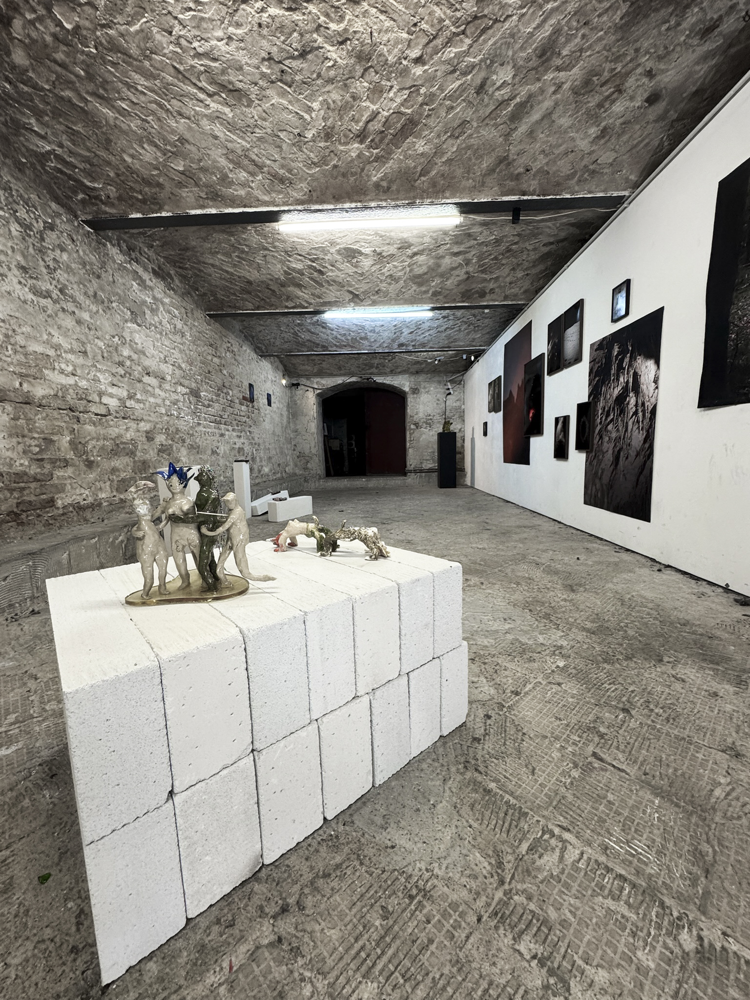
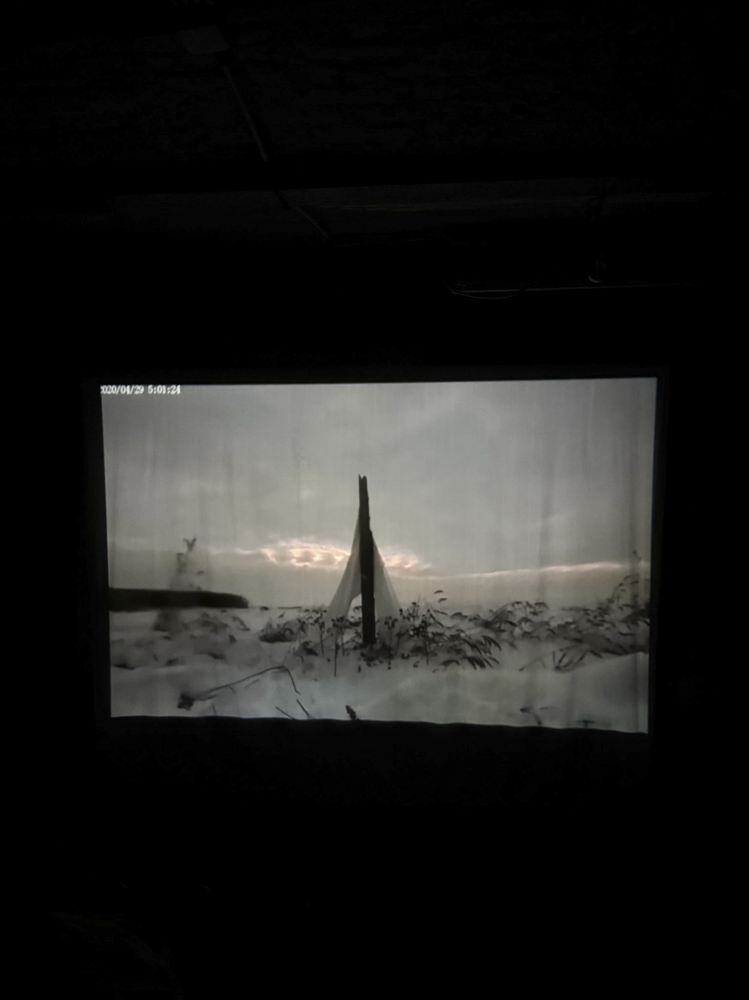

tg @lzedka inst @lzedka email liza.zemskowa@mail.ru
© 2026 liza zemskova all rights reserved
cultural loops, 2025
- путешествие по истории, от спекулятивного будущего, через настоящее, полное призраками прошлого и потенциями будущего, к недрам цивилизации ископаемой культуры. Проект 'Cultural Loops' предлагает исследовать культурные слои, оставленные нашей цивилизацией, в перспективе далекого будущего. Экспозиция открывается с фантазии о возможных эволюционных процессах и попытки классифицировать археологические находки. Среди экспонатов: инопланетного вида окаменелая фауна, отпечатки знакомых нам растений, фоссилизированные останки человекоподобных существ, графическая реконструкция будущих мутаций человека и растений, размышления о сохранности и памяти. Спускаясь по лестнице, мы идем в следующие слои. Здесь представлены находки характерные для городского слоя: кристаллизованные предметы быта, отпечатанные в бетоне следы цивилизации, в них можно разглядеть не только материальный аспект, но и хрупкие остатки внутренней/психологической жизни индивидов. Далее мы переходим к рассмотрению среза современной культуры. Пограничная зона, в которой объекты сублимируют утраченное будущее. Они активно обращаются к эстетикам недавнего прошлого, переосмысливают образы классического искусства и архаических мистических практик с помощью современных технологий, задумываются о том, что остается после человека на повседневном уровне. Работы стремятся быть в разных временных отрезках одновременно и провоцируют образование культурной петли. Где ее начало, где конец, есть ли движение вообще? Уже не разобрать. И в конце погружение к корням цивилизации. Работы этого сегмента ведут диалог с древностью напрямую: материалы, с которыми человек знаком тысячелетиями, техники античного искусства, легендарные сюжеты, сопровождающие человечество на протяжении всей его истории. Желание соприкоснуться к самому процессу ‘историзации’, прощупать нити глубоко уходящего времени. Почти спиритуализм, разговор с призраками, давно погребенными, но продолжающими жить и дышать в нашем культурном поле. Проект исследует взаимообращение и нераздилимость никогда не прошедшего прошлого, невозможного будущего и несуществующего настоящего. Он демонстрирует закономерности культурных заимствований, апроприаций и переосмыслений. И единственное, что человечество может противопоставить колонизации прошлого – спекуляция об отсутствии будущего. кураторы: Viktoria Vysotskaia / Liza Zemskova / Lera Dobrinec художники: Lonni Wong / Daniel Schulz / Olga Urbanek / Johanna Brummack / Polina Ryman / Isabel Waller / Polina TrishkinaKseniia / AntipinaIoana Pirlea / Margarita Montgomery / Mia Butter / Rosa Kirsch / David Kinkybanana / Dana Melaver / Ana Kotar / Ornella Orlandini / Ira Jigilo / Sofia Efremenko / Lucia Berlanga / Nadia D’Alessio / Liza Zemskova / Vasilisa Palianina See our vision (Berlin) 24.05 – 31.05 ссылки: https://sov.gallery/cultloopsonline/ https://drive.google.com/file/d/1ebEk2ZD4OsSsy7nGDHZs7IlEr_xSb00W/view https://www.icloud.com/sharedalbum/ru-ru/#B225qXGF1Gw27In
[selected]








7±2, 2025
- эксперимент по созданию рекурсии в контингентных условиях экспозиции. Давно замечено, что известный человеку мир действует по принципу симпоэзиса, который описывает не односторонние реакции видов на окружающую среду, а двустороннюю рекурсивную адаптацию категорий 'жизнь' и 'окружающая среда'. Таким образом рекурсия осуществляется на всех уровнях: клетки нашего тела, атмосфера, процессы мышления, социальные структуры. Гипотеза: существуют разнонаправленные, нестабильные движения объектов (условно 'внутрь' и 'наружу'), которые воздействуют на границы объект/объектных отношений, и вызывают онтологические разрывы. В этих разрывах (аналогичных вакууму) рождаются флуктуации, случайные разнонаправленные возмущения, которые в свою очередь тоже представлены своими объектами и их отношениями. В эксперименте я хочу смоделировать условия создания онтологического разрыва и вытекающей из него рекурсии. Так как движения нестабильные и непрерывные, предполагается взять временной отрывок существования объектов в 30 секунд - отрезок времени, которым ограничена продолжительность удерживания информации краткосрочной памятью в состоянии, пригодном для использования сознанием. После 30 секунд след информации становится настолько хрупким, что даже минимальное вмешательство разрушает его. Объём кратковременной памяти чаще всего оценивается в «7±2 элемента Работы исследуют, каким образом материальные и визуальные формы взаимодействуют с когнитивными, социальными и институциональными системами, фиксирующими множественные переживания. куратор: Лиза Земскова художники: Аруна Радха / Ганна Зубкова / Ольга Шамшура / Олеся Гуминенко / Оксана Виноградова / Юлия Колганова / Лиза Земскова / Оксана Тимченко / Виктория Высоцкая ЦТИ Фабрика (Москва) 04.06 - 18.06 ссылки: https://fabrikacci.com/exhibitions/archive/72.html https://spectate.ru/research-praxis-space/ https://www.researchpraxis.space/
[selected]